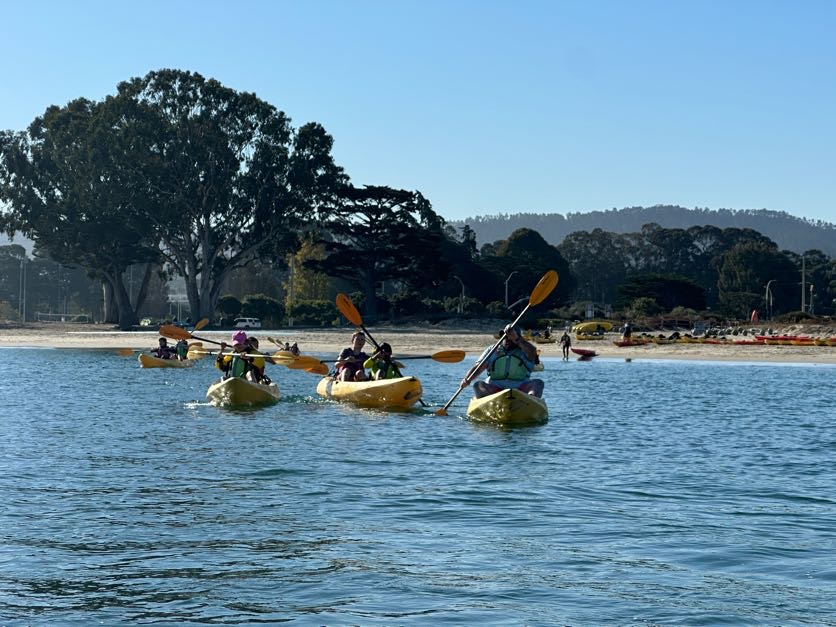
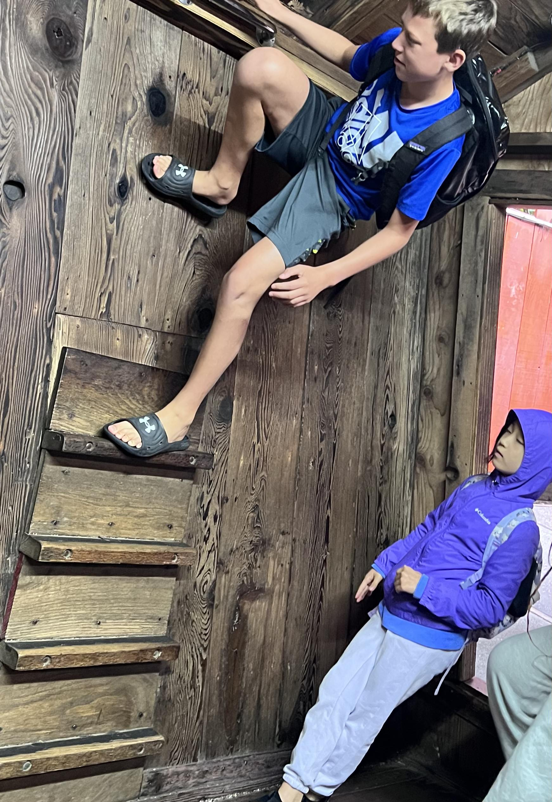
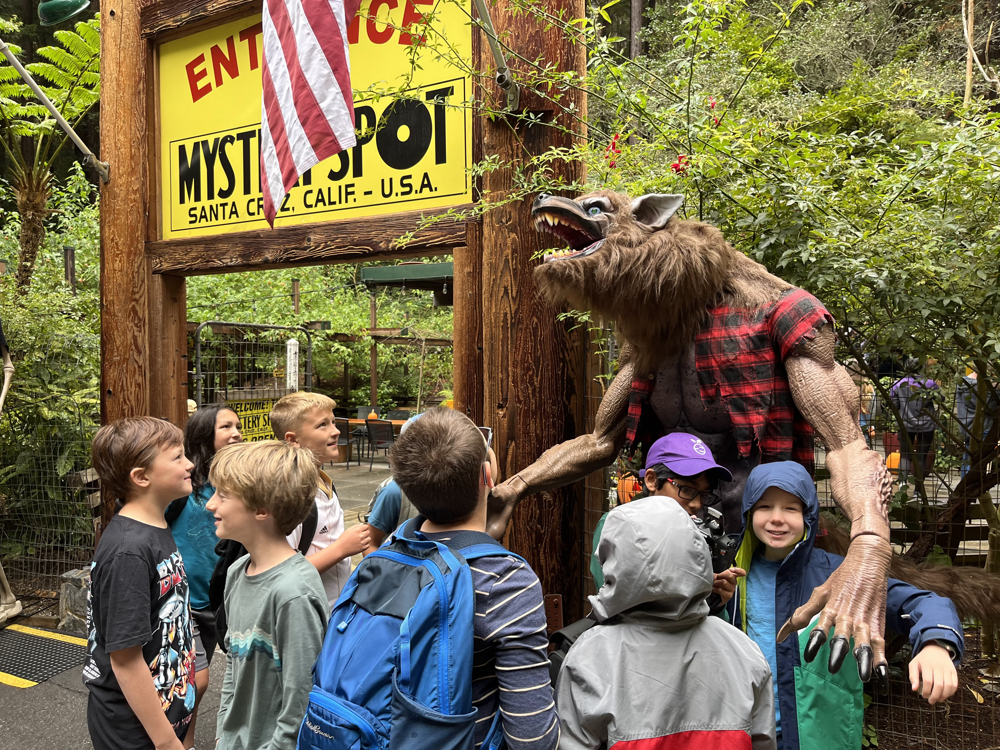
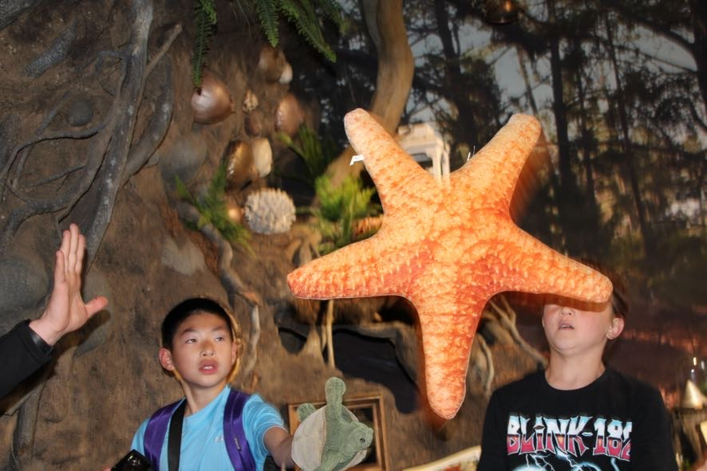
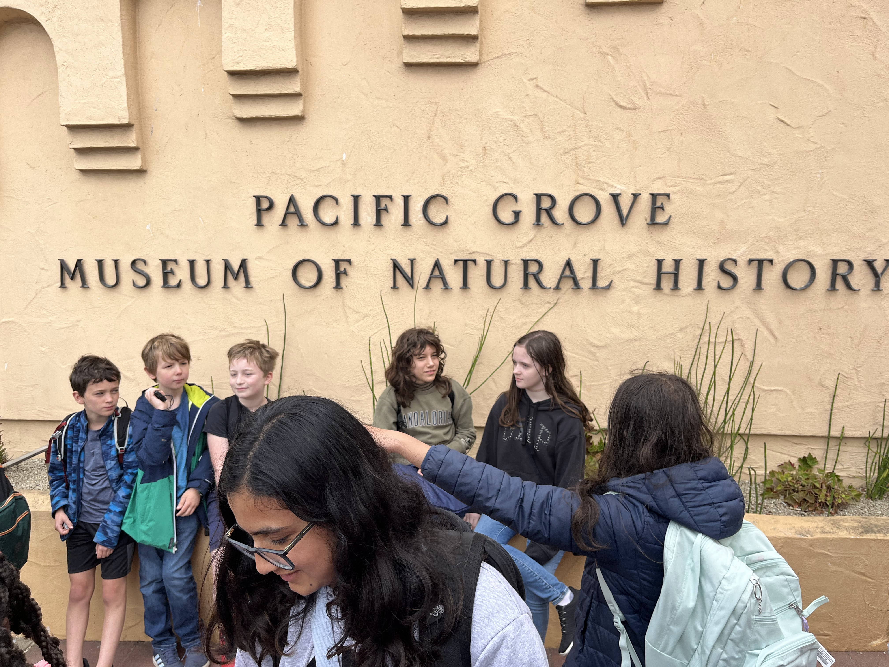
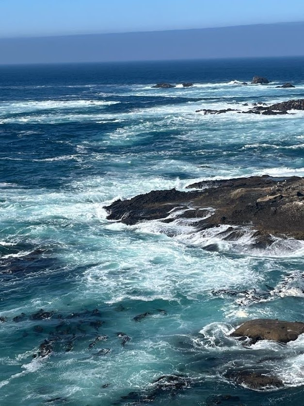

Tuesday: Kayaking
After we dropped of our stuff at the hotel we walked to a kayaking place. On the way we saw Sea Lions on the rocks. We also saw them while kayaking. When I went kayaking, a couple of sea lions chased us becaused we went to close to their territory. After we got back to the hotel and changed, three groups split for dinner
Wensday: The Mystery spot
The next day we went, to the Mystery Spot, where things are mysterious. I will not divulge the secrets of it, because its for you to figure it out. However I will show you a picture of a certain Enzo Esterhay, somehow gaining superpowers along with others in the vicinity of the Mystery Spot




Wensday Part 2: Pacific Grove Natural History Museum
On that same day we went to the Santa Cruz board walk for lunch, and the Pacific Grove Natural History Museum. There we saw history of Monterey Such as a model of the chinese fishing village, animals there and a collection of sand from beaches all over the world. We also saw a Mr H. reveal his telekinesis powers as seen in the picture. (Picture Taken by Arjun Kay). After that we went back to our hotel for dinner.
Thursday: MEarth
Testing...



Thursday Part 2: Fancy Dinner
After all of us got dressed in our fancy closed, watched tv, and got makeup done we met and then started walking to fancy dinner. Our fancy dinner was a seafood place on a boardwalk, we went the same way we went to kayaking but went a bit farther. After we got there we took a group photo then went inside, and got settled. After ordering our food we talked a and played games like rock paper scissors, bang bang shoot, and chopsticks. The only orders we could get were kalamairi, alfredo pasta, and somthing else that I dont remeber. I got the kalamairi and I can say it was delicious. After we ate, we walked back to our hotel and slept in our rooms for the last time.

Friday: Tech Interactive and Home
On our final day we went to Tech Interactive...